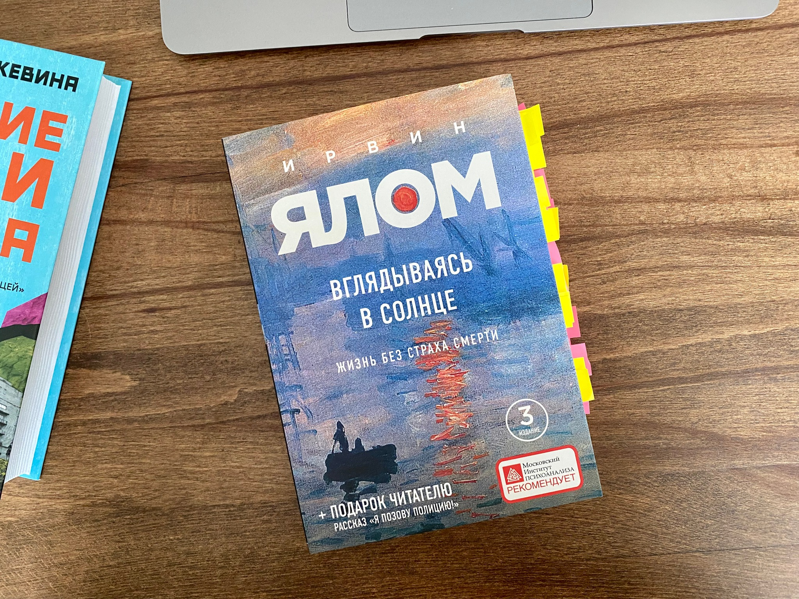

Тема смерти в нашей культуре табуирована. Обсуждать её не запрещено, но некомфортно. Табуированность проще всего снимается религиями, но россияне, на мой взгляд, не являются в массе своей религиозными людьми. Несмотря на то, что любят разбивать лоб в ритуалах.
Меня тема физической смерти особо никогда не вдохновляла и не возбуждала. Как дождь или как ветер. Ну дует и do it.
Что такое физическая смерть, если десакрализировать и декомпозировать понятие? Это всего лишь невозможность осуществлять и реализовывать более свои желания и планы, и более ничего. То есть, человек без желаний и планов фактически (хоть и не физически) уже мёртв. «Смерть это невозможность дальнейшей возможности», как писал Мартин Хайдеггер. И в этой концепции смерть гораздо чаще окружает нас, чем кажется.
Книгу Ирвина Ялома я решил прочитать, чтобы узнать с какими проблемами сталкиваются люди, и как с этими проблемами работают психотерапевты. В произведении рассмотрены приёмы по борьбе со страхом смерти, что теряют люди, боясь умереть, и как окружающие могут помочь перебороть это страх.
«Много лет назад в романе Алана Шарпа «Зеленое дерево в Геддо» мне запомнилось описание сельского кладбища, разделенного на два участка: «мертвые, о которых помнят» и «истинно мертвые». Могилы «мертвых, о которых помнят» были ухожены и украшены цветами, а могилы «истинно мертвых» выглядели покинутыми. Эти «истинно мертвые» умерли много лет назад, никто из живущих ныне их не знал. Старый человек — любой старый человек — последнее хранилище воспоминаний о многих людях. Когда умирает глубокий старик, он неминуемо забирает с собой множество других людей.»
